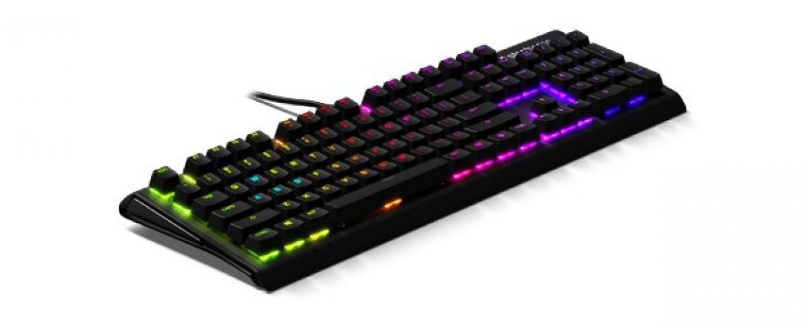
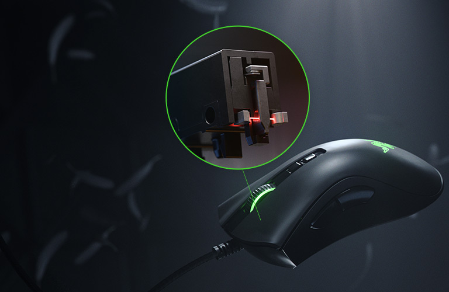
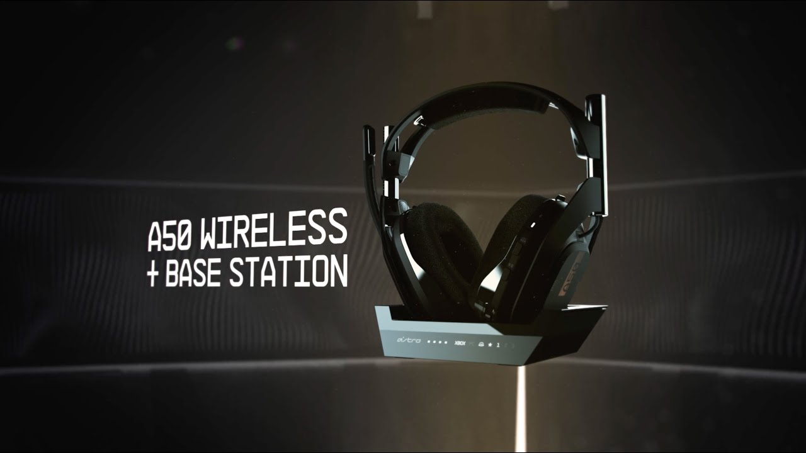

Lista de Novedades
Perifericos
BenQ ZOWIE XL2411P 24" LED 144Hz e-Sports
BenQ ZOWIE XL2411P es un monitor para PC que puede ser utilizado para pasar muchas horas practicando gaming en el ordenador. Posee un panel TN con retroiluminación WLED y un montón de entradas de video digitales que se pueden utilizar simultáneamente para diversas fuentes. Además, hay que destacar que esta marca de monitores, BenQ, es la que se utiliza oficialmente en los torneos de e-Sports como DreamHack, ESL, MGL,…
Teclado gaming
Los teclados para juegos o gaming se centran en los mecanismos Cherry MX rojo y negro, pero los marrones también son bastante frecuentes. El primero requiere poca fuerza de actuación, y por lo tanto son de respuesta rápida, buenos para juegos que se requiere aporrear literalmente el teclado continuamente. En el caso de los Cherry negros, estas teclas necesitan mayor fuerza de actuación, por lo que son mejores para juegos en los que necesites evitar pulsaciones involuntarias de las teclas, algo habituales con los Cherry rojo
Personalmente encuentro los mecanismos MX marrones de la alemana Cherry como estupendos para escribir y jugar, sobre todo si la calidad de la tecla acompaña —como en los Corsair Gaming K70 o K95.

¿Qué debes tener en cuenta en un ratón gaming?
Los ratones gaming son una variedad de periféricos orientados completamente a sacarle todo el partido a tus videojuegos. Especialmente, por su construcción y características están muy pensados para optimizar tus partidas competitivas y usarlos de forma intensiva durante horas. Esto es lo que debes tener en cuenta antes de comprarlos:
Tipo de ratón. En el mundo de los ratones gaming hay dos grandes grupos: los que ofrecen tecnología óptica y los que funcionan por láser. Ambos tipos de sensores pueden ofrecer una gran experiencia, pero los ratones ópticos tienen una precisión ligeramente mejor.
Conectividad. La otra gran cuestión es si vas a elegir un ratón inalámbrico o con cable. Los primeros ofrecen mayor comodidad, pero deberás tener en cuenta la duración de la batería, que se consumirá antes si usas la iluminación RGB, además de la latencia.
Bluetooth o 2,4 G. Si optas por una conexión inalámbrica, el bluetooth te ofrece más versatilidad para cambiar entres dispositivos, pero tiene mayor latencia que los modelos con dongle y 2,4 GHz.
Tipo de agarre. Los ratones gaming más cómodos son los que cuentan con agarre de palma, dado que toda la mano descansa sobre el ratón.
DPI. Por último, deberás buscar los que ofrezcan mayor DPI o CPI, que son a grandes rasgos lo mismo. Cuanto mayor sea este valor, más sensibilidad tendrá tu ratón gaming.

Astros A50

El sonido es un aspecto importante de un videojuego, y la capacidad de comunicarse con tus aliados y tus enemigos es una parte importante de los juegos en modo multijugador. Debido a esto, unos auriculares inalámbricos de juego de calidad son un elemento vital en el arsenal de cualquier jugador.
A un precio de 300 euros, los Astro A50 Wireless 7.1 son uno de los auriculares para juegos más caros en el mercado, pero dada su excelente calidad de audio, su diseño cómodo, y compatibilidad tanto con PC, Xbox 360 y PlayStation 4, son actualmente los mejores que he probado. Suenan estelares, se sienten bien, y tienen la comodidad de un auricular inalámbrico, ganándose el puesto de Nuestra Selección del Editor para auriculares de videojuegos.